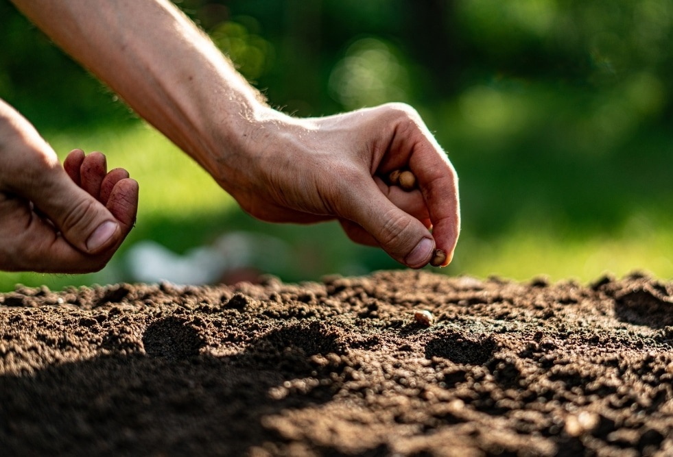
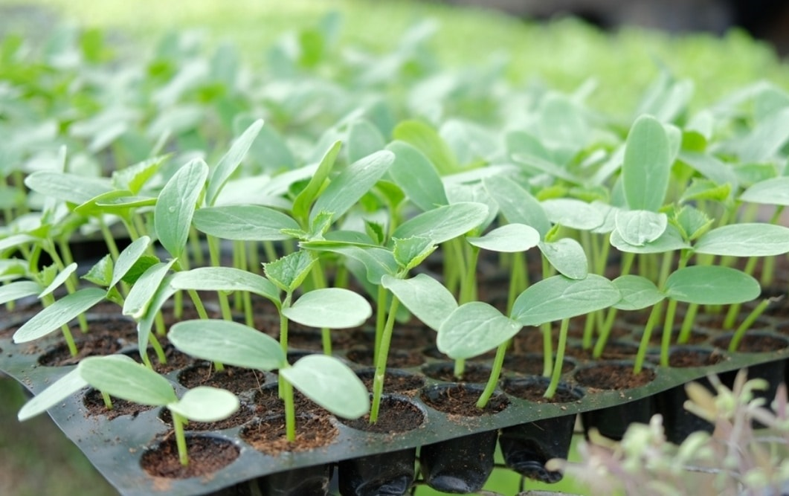

Prepare your beds with a thin 1-2” layer of compost or topsoil at the top.
Rake it nice and smooth.
Use the handle of the rake to draw a shallow line in the soil.
Carefully pour your seed packet into a shallow bowl or cup.
Drop your seeds at the recommended spacing (or a little denser- you can always thin later).
Cover with a light layer of soil, ensuring that seeds won’t peak above the soil level when watered in. But also be sure they aren’t too deep or they will have trouble reaching up for the light.
Water thoroughly and keep moist, but not soggy, until germination.
Use small scissors or needle-tip pruners to thin to the desired spacing.

How to Transplant
Prepare the garden beds by weeding and raking clean.
Gently loosen seedling starts from their cells by squeezing the bottom of the tray until it releases the root ball
(careful not to disturb the roots).
Use a Hori Hori planting knife to create a hole about as deep as the root ball. Most plants should be transplanted to
the same soil level as they were in their cell packs. The main exception is tomatoes, which can be planted deep and will
root all along the stem.
Use your tape measure to properly space the rest of the plants (they will look far apart, but don’t worry- they’ll fill
in the space as they grow!).
Thoroughly “water in” the new transplants to help them connect with their new soil.
Optional, protect with row cover (anchored with bricks, sandbags, or landscape staples) until your plants are established.

Tasks:
Congratulations! You have completed all modules in this part!
About us
We are two eager students who are trully passionate about everything related to gardening.